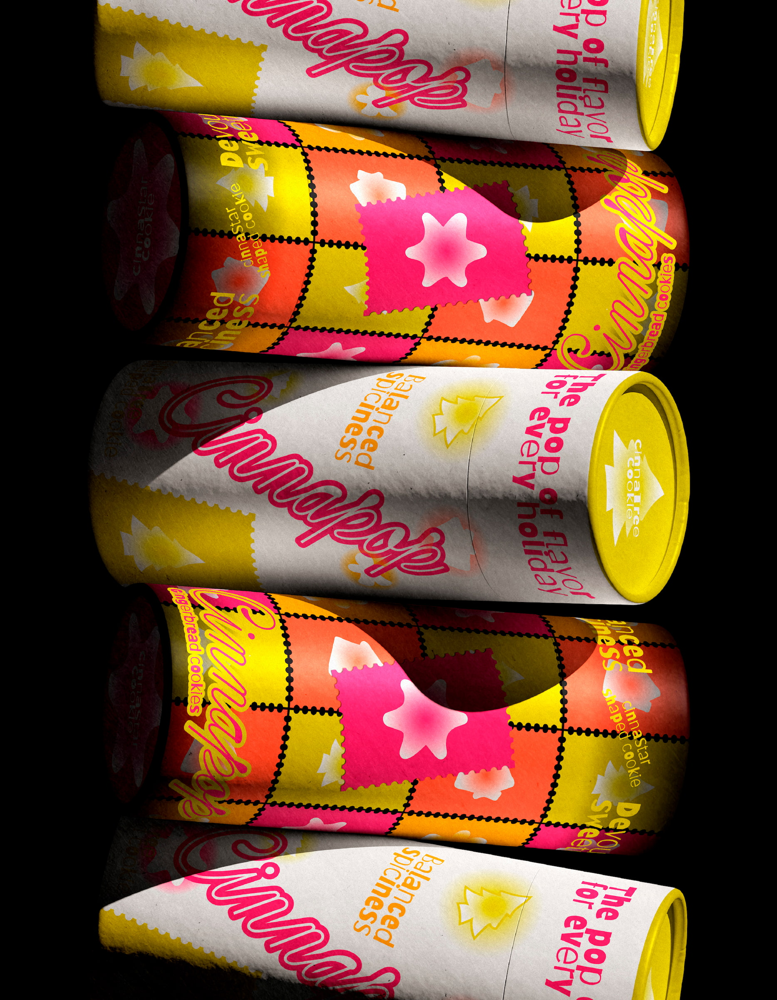

Overview
—
001
Concept
A pop of color and a pop of flavor, Cinnapop is Santa's favorite gingerbread cookie. It's made for the holidays, for gifting, or honestly just for whenever you want something sweet and spiced. The flavor is warm and comforting but still exciting, hitting that balance between cozy gingerbread spice and just the right amount of sweetness.
For this brief, my main goal was to avoid creating "granny's cookies." I didn't want the packaging to feel old-fashioned, muted, or overly traditional. Gingerbread has so much personality, and I wanted the branding to reflect that. The direction was modern, playful, and bold, while still keeping small touches of nostalgia through type, outlines, and familiar shapes. Those elements are there to spark memory, but not to take over the design.
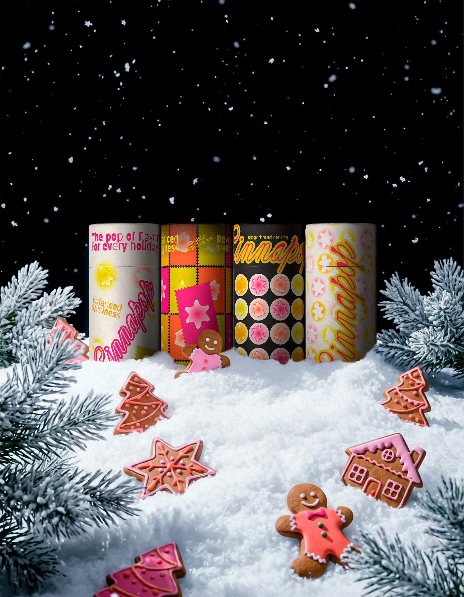
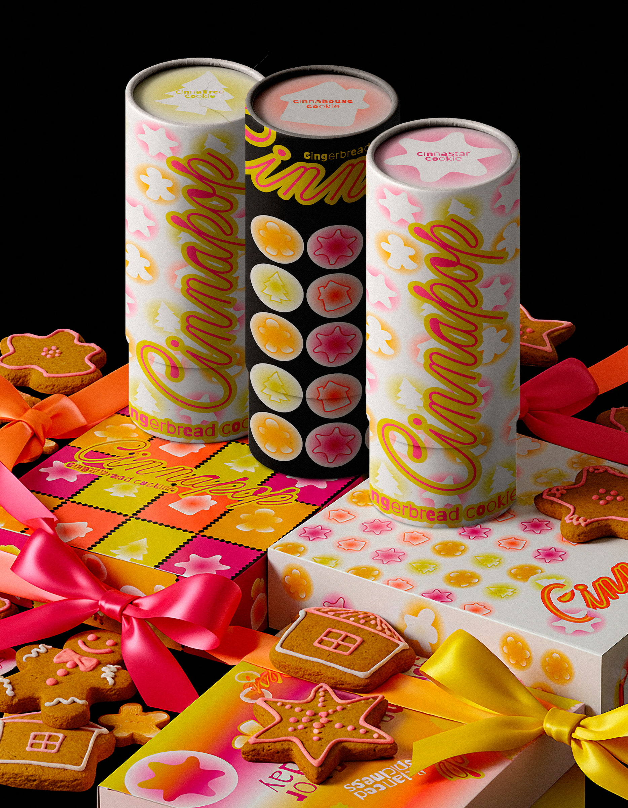
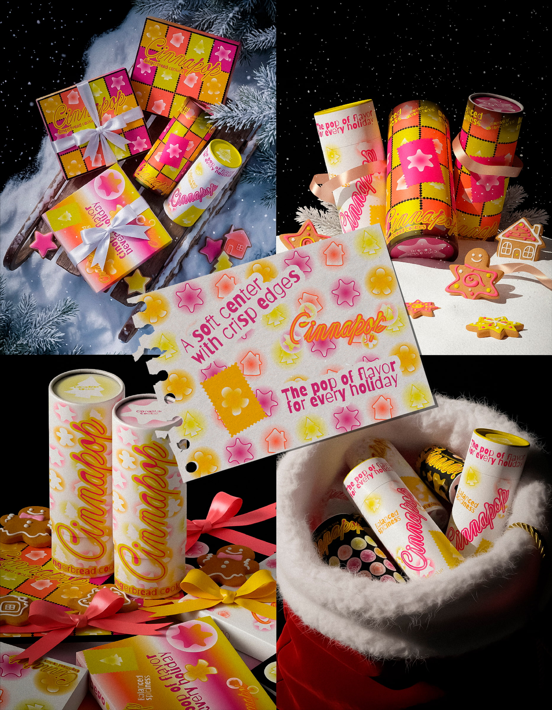
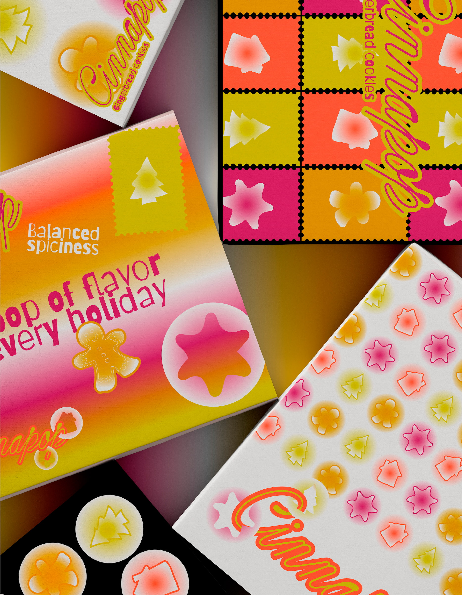
Development
—
002
The Packaging Design
Color, pattern, and variety were key throughout the process. I used strong contrasts and bright, unexpected color combinations to give the brand energy and make it feel fun and craveable. The graphics are layered and collage-like, inspired by cookie cutters, stamps, and packaging ephemera, creating a sense of movement and abundance rather than something too clean or minimal.
The setting stays festive and wintery, but that wasn't the point of the brand. Cinnapop is meant to be an experience you can enjoy any day, not just during the holidays. Even when leaning into a Christmas feel for this art direction, the goal was to show how the brand can live beyond the season—playful, bold, and full of flavor, no matter the moment.
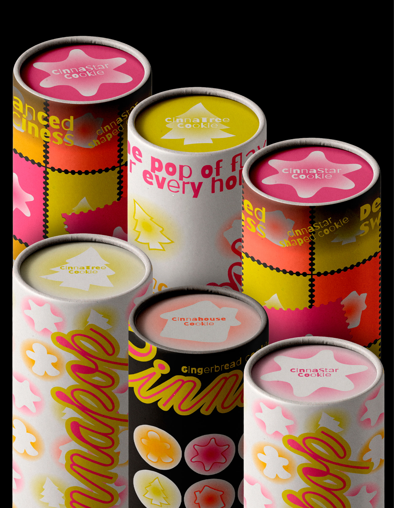
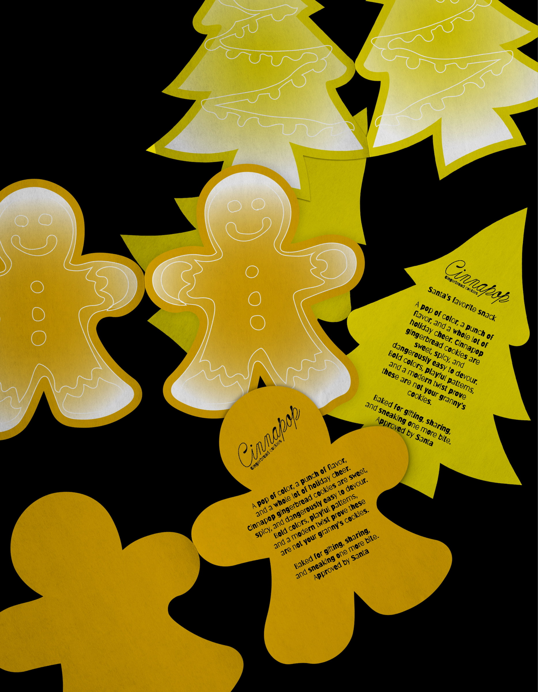
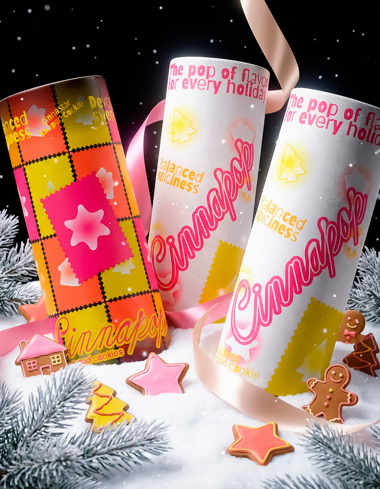
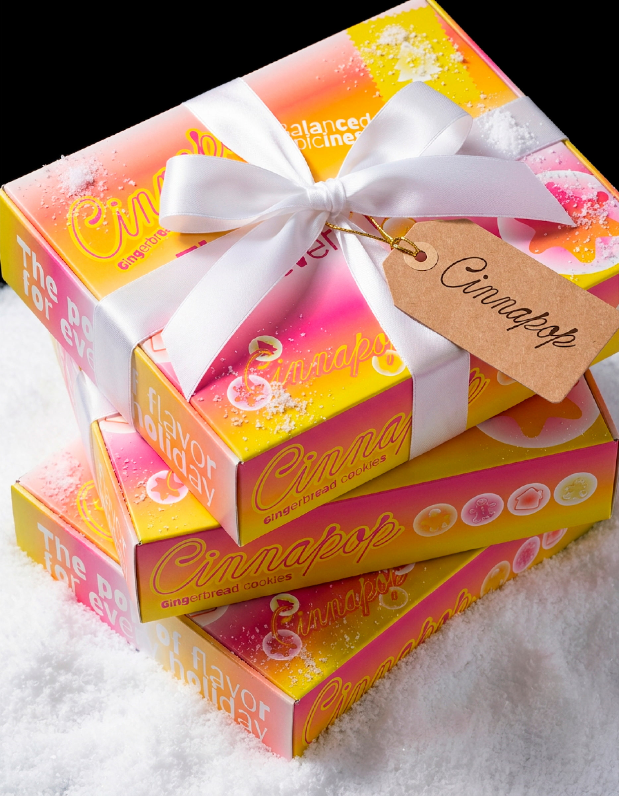
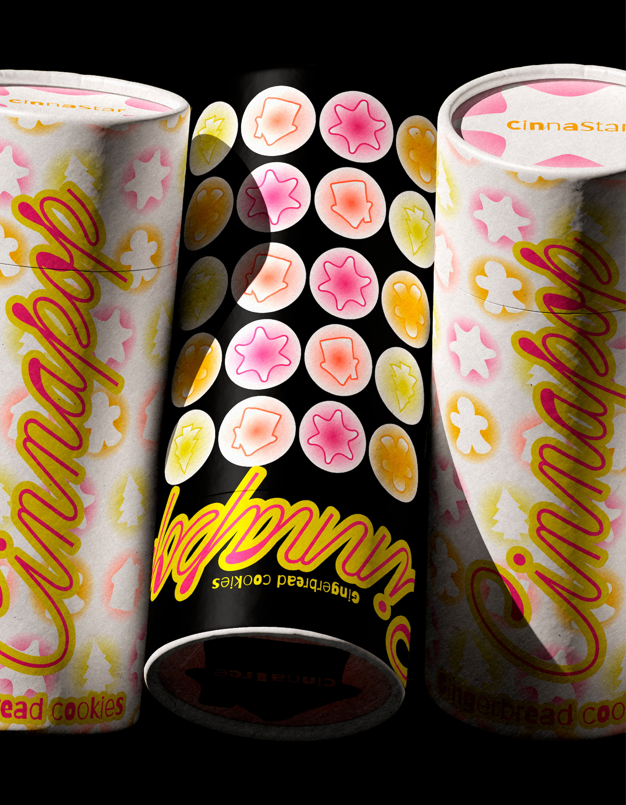
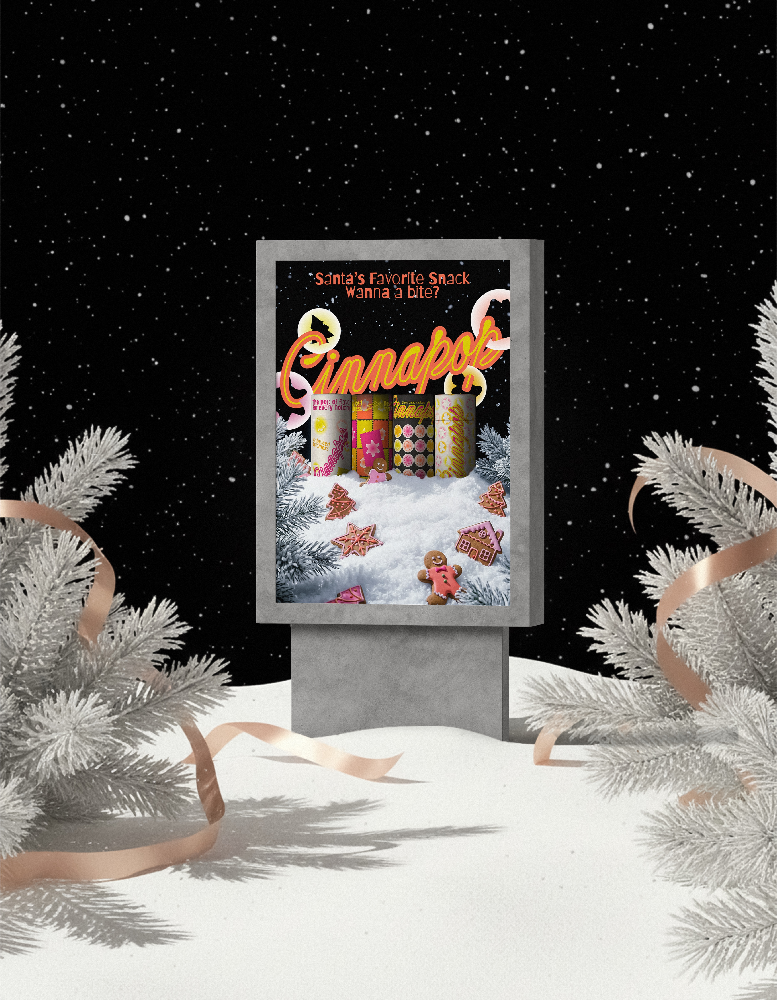
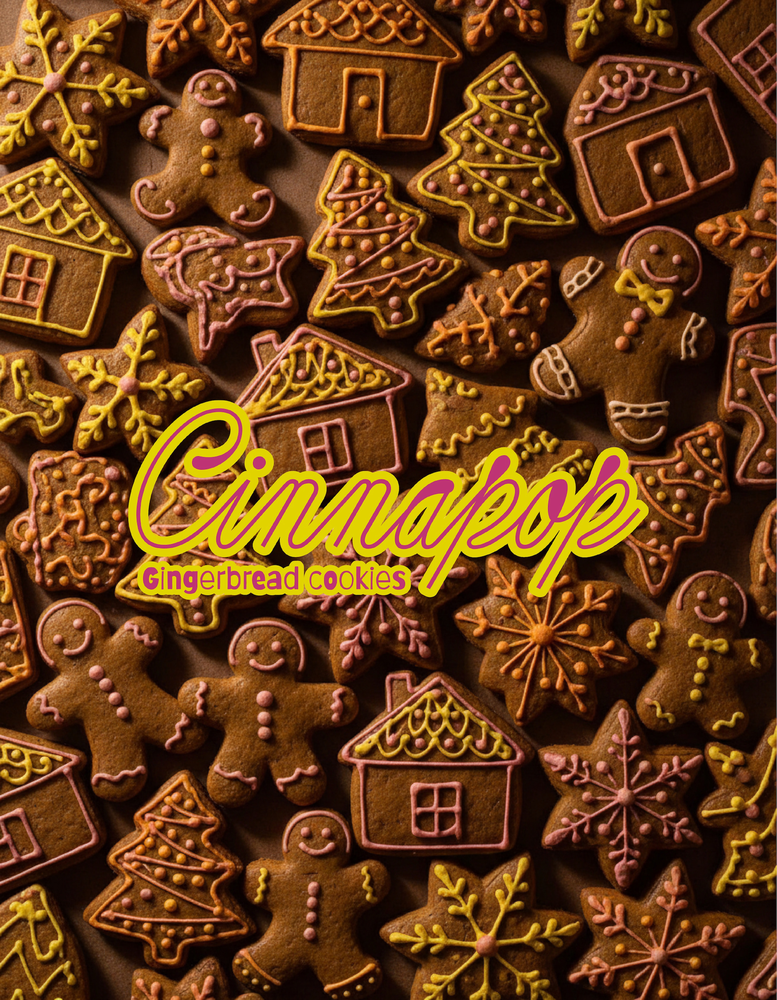
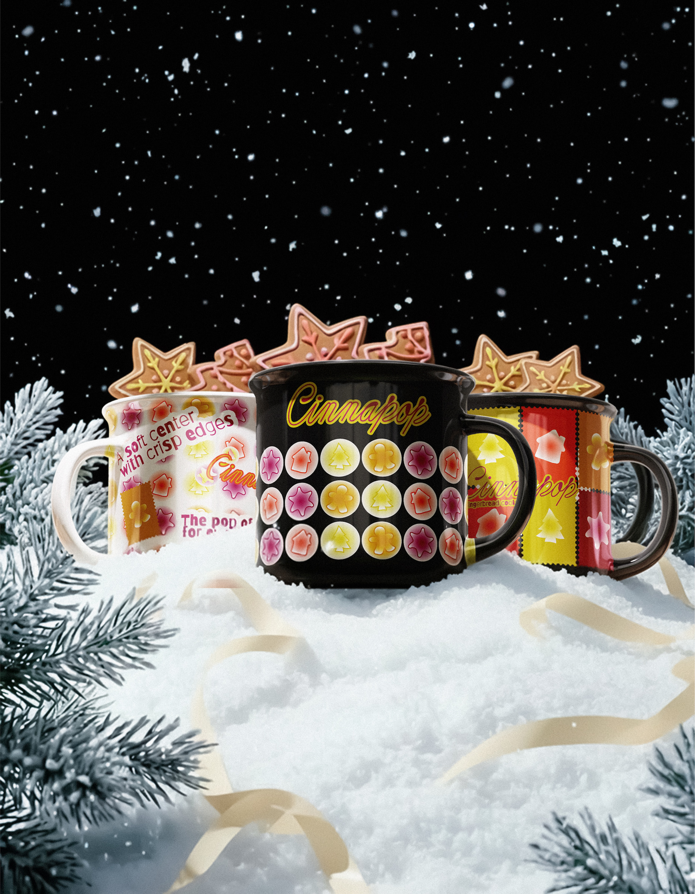